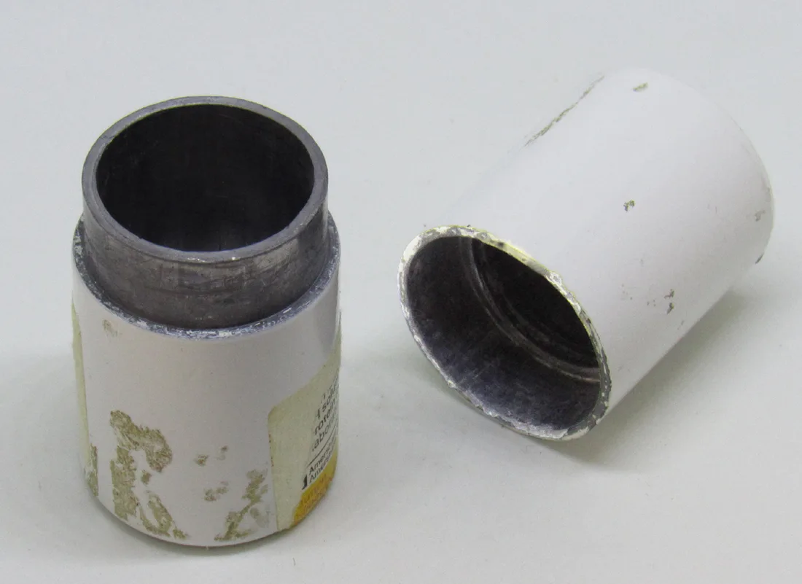
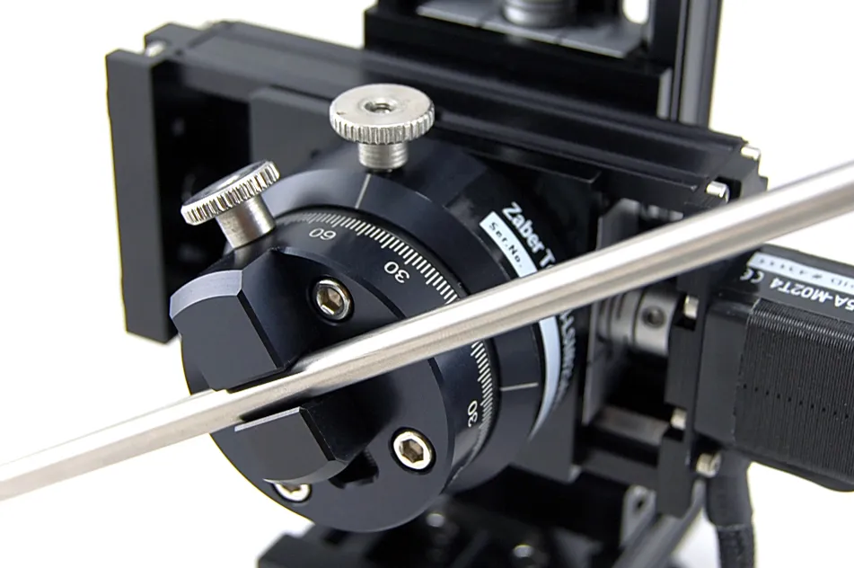

Remote Handling
Ball Tong Manipulators
Remote-handling equipment for operations where distance and controlled manipulation are required.
Request specificationsStart with the task: what needs to be handled, shielded or positioned? Explore the categories below, then discuss the configuration your application requires.
Find a starting point for your application. Discuss equipment suitability and request configuration details before selecting a product.
Showing 5 products
Remote-handling equipment for operations where distance and controlled manipulation are required.
Request specifications
Portable radiation-shielding solutions configured around the intended work environment and application.
Request specifications
Shielded containment and handling solutions for applications involving radioactive materials.
Request specifications
Shielding configurations that support operator visibility while maintaining physical separation from the work area.
Request specifications
Precision manipulation equipment for specialized handling requirements and controlled work environments.
Request specificationsPhotos illustrate industry applications, rather than the exact product configurations offered.
Telodynamic can discuss an existing product requirement or a custom engineering need.